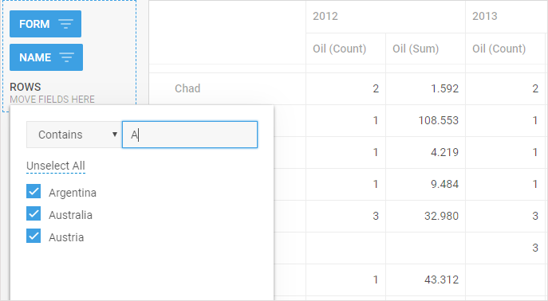
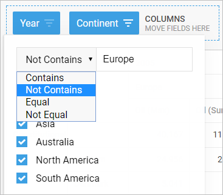
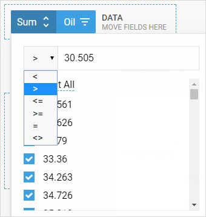
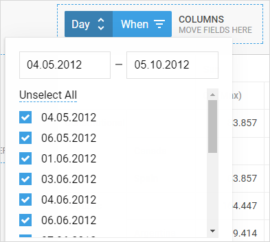

dhtmlxPivot allows you to set various filters for fields depending on the type of data. You can specify filters both via the Pivot interface after initialization or through the corresponding API.
There is a set of methods that make your work with filters as easy as ABC. They allow you to apply global filtering rules to Pivot, set/get filters for separate fields, specify filters for several fields at a time and get all the filters defined in Pivot. One more useful feature is the possibility to remove all the applied filters at once.
There are user interface elements of filtering that let an end-user to interact with filters in an application. Filters are enabled by default and rendered on the initialization of the component.

Related sample: Basic initialization - DHTMLX Pivot
You can switch the filters on and off via the showFilters attribute of the layout configuration option:
var pivot = new dhx.Pivot(document.body, {
data: dataset,
fields: {
// the fields structure
},
fieldList: [
// the fields list
],
// disabling rendering of filters
layout: {
showFilters: false
}
});
Related sample: Global filter - DHTMLX Pivot
There are three types of filters that depend on the type of data used in a field: string, number and date.
The string filter contains the following rules: "Contains", "Not contains", "Equal", "Not equal":

The number filter contains the following rules: "<" ("less than"), ">" ("greater than"),"<=" ("less than or equal"),">=" ("greater than or equal"),"=" ("equal"),"<>" ("not equal").

The dates filter allows setting a period of time (dates "from" and "to") for which data should be rendered.

A global filter allows applying several filtering rules for the data set of pivot at once. You can filter the data set globally and then define any additional filters to the fields.
To specify the global filter, use the setGlobalFilter method. It takes one parameter - a filtering function that implements the filtering logic:
pivot.setGlobalFilter(function(row){
return row.form === "Republic" && row.year > 2007
});
Related sample: Global filter - DHTMLX Pivot
To set a filter for a certain field, you need to make use of the setFilterValue method. The method takes two parameters:
pivot.setFilterValue("name",{
operation:"ct",
filter:"a",
values:["Argentina","Australia"]
});
Note that there are some important points in setting filters for fields that work with date values:
pivot.setFilterValue("when",{
filter:{from:"01.03.2012",to:"01.05.2012"},
values:[1336078800000]
});
fieldList: [
{ id: "name", label: "Name" },
{ id: "year", label: "Year", type: "number" },
{ id: "when", label: "When", type: "date",
format: "%d/%m/%Y", inputFormat: "%d.%m.%Y" }
// more fields
]
Related sample: Filter date format - DHTMLX Pivot
You can set filters for several fields at a time with the help of the setFiltersValues method. You should pass one parameter to it - a hash that contains a set of key:value pairs, where the key is the id of the field and the value is the configuration of the filter:
pivot.setFiltersValues({
"form":{filter: "republic", operation: "ct",values: ["Republic"]},
"name":{filter: "a", operation: "ct",values: ["Argentina","Austria"]}
});
Each filter configuration object includes the same attributes as those described above for the second parameter of the setFilter() method.
Operations for string or number filters
There is a set of predefined filtering rules that can be applied either to string or number data values. For details on setting filters for fields with the date type, see the related section.
All types of operations are set as strings. They are:
To get the filter of a certain field, make use of the getFilterValue method. As a parameter, you need to pass the id of a related field:
pivot.getFilterValue("name");
The method returns an object with the configuration of the filter that includes the attributes below:
You can also get all the filters applied to Pivot fields via the getFiltersValues method.
pivot.getFiltersValues();
The method returns a hash of objects, each of which contains the name of the field and the configuration object of the filter. Each filter configuration object includes the same attributes as those described for the return object of the getFilterValue() method.
There are two ways of removing filters set for Pivot fields.
pivot.setFilterValue("name",{});
pivot.clearFilterValues();